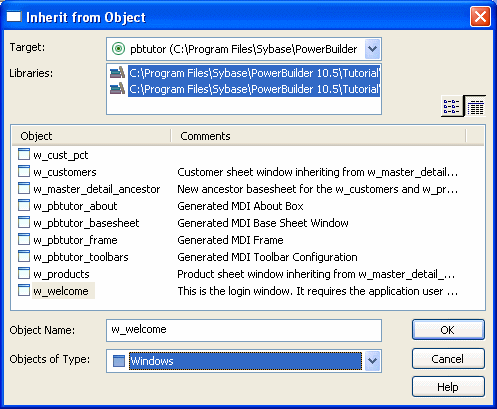
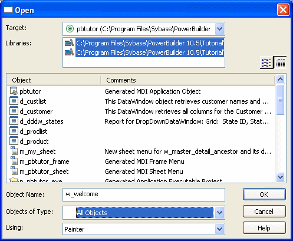

In PowerScript targets, you can:
After you create or open an object, the object displays in its painter and you work on it there.
To create new objects, you use the New dialog box.
 To create a new object:
To create a new object:
In the New dialog box, select the appropriate tab page for the object you want to create.
You use icons on the PB Object tab page for creating new user objects, windows, menus, structures, and functions.
Select an icon and click OK.
One of the most powerful features of PowerBuilder is inheritance. With inheritance, you can create a new window, user object, or menu (a descendent object) from an existing object (the ancestor object).
 To create a new object by inheriting it from an
existing object:
To create a new object by inheriting it from an
existing object:
Click the Inherit button in the PowerBar, or select File>Inherit from the menu bar.
In the Inherit From Object dialog box, select the object type (menu, user object, or window) from the Object Type drop-down list. Then select the target as well as the library or libraries you want to look in. Finally, select the object from which you want to inherit the new object.

 Displaying objects from many libraries To find an object more easily, you can select more than one
library in the Libraries list. Use Ctrl+Click to select
additional libraries and Shift+Click to select a range.
Displaying objects from many libraries To find an object more easily, you can select more than one
library in the Libraries list. Use Ctrl+Click to select
additional libraries and Shift+Click to select a range.
Click OK.
The new object, which is a descendant of the object you chose to inherit from, opens in the appropriate painter.
For more information about inheritance, see Chapter 13, "Understanding Inheritance ."
As you use PowerBuilder to develop your application, you create many different components that require names. These components include objects such as windows and menus, controls that go into your windows, and variables for your event and function scripts.
You should devise a set of naming conventions and follow them throughout your project. When you are working in a team, this is critical to enforcing consistency and enabling others to understand your code. This section provides tables of common naming conventions. PowerBuilder does not require you to use these conventions, but they are followed in many PowerBuilder books and examples.
All indentifiers in PowerBuilder can be up to 40 characters long. The first few characters are typically used to specify a prefix that identifies the kind of object or variable, followed by an underscore character, followed by a string of characters that uniquely describes this particular object or variable.
Table 5-2 shows common prefixes for objects that you create in PowerBuilder.
The prefix for variables typically combines a letter that represents the scope of the variable and a letter or letters that represent its datatype. Table 5-3 lists the prefixes used to indicate a variable's scope. Table 5-4 lists the prefixes for standard datatypes, such as integer or string.
The variable might also be a PowerBuilder object or control. Table 5-5 lists prefixes for some common PowerBuilder system objects. For controls, you can use the standard prefix that PowerBuilder uses when you add a control to a window or visual user object. To see these prefixes, open the Window painter, select Design>Options, and look at the Prefixes 1 and Prefixes 2 pages.
| Prefix | Description |
|---|---|
| a | Argument to an event or function |
| g | Global variable |
| i | Instance variable |
| l | Local variable |
| s | Shared variable |
You can open existing objects through the Open dialog box or directly from the System Tree.
 To open existing objects:
To open existing objects:
Click the Open button in the PowerBar or select File>Open from the menu bar.
 When using the System Tree To open an existing object directly from the System Tree,
either double-click on the object name or select Edit from
the pop-up menu.
When using the System Tree To open an existing object directly from the System Tree,
either double-click on the object name or select Edit from
the pop-up menu.
In the Open dialog box, select the object type from the Object Type drop-down list. Then select the target as well as the library or libraries you want to look in. Finally select the object you want to open.

 Displaying objects from many libraries To find an object more easily, you can select more than one
library in the Libraries list. Use Ctrl+Click to select
additional libraries and Shift+Click to select a range.
Displaying objects from many libraries To find an object more easily, you can select more than one
library in the Libraries list. Use Ctrl+Click to select
additional libraries and Shift+Click to select a range.
Click OK.
The object opens in the appropriate painter.
You can quickly open recently opened objects by selecting File>Recent Objects from the menu bar. The Recent Objects list includes the eight most recently opened objects by default, but you can include up to 36 objects on the list.
 To modify the number of recent objects:
To modify the number of recent objects:
Select Tools>System Options from the menu bar.
On the General page of the System Options dialog box, modify the number for the recent objects list.
To run a window or preview a DataWindow object, you use the Run dialog box.
 Using the System Tree Instead of using the Run dialog box, you can right-click the
object in the System Tree and select Run/Preview from the
pop-up menu.
Using the System Tree Instead of using the Run dialog box, you can right-click the
object in the System Tree and select Run/Preview from the
pop-up menu.
 To run or preview an object:
To run or preview an object:
In the Run dialog box, select the object type from the Object Type drop-down list.
Select the target as well as the library or libraries you want to look in.
Select the object you want to run or preview and click OK.
The object runs or is previewed.
For more specific information on running a window, see "Running a window". For information on using the DataWindow painter's Preview view, see Chapter 18, "Defining DataWindow Objects ."